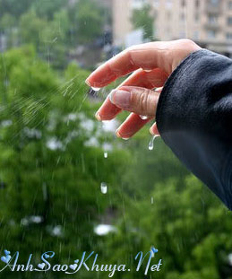

|
Mọi thứ đã qua thật rồi, Anh ạ. Qua rồi những ngày em bất chấp tất cả chỉ để yêu anh, em từng yêu anh hơn hết thảy, hết thảy mọi điều. Qua rồi những ngày em phủ định chính mình để cho phép em mỉm cười trước những đau đớn mà anh mang lại. Và giờ đây, em cũng sẽ can đảm mà tạm biệt anh bằng một nụ cười như thế. Có thể… Có thể anh nghĩ rằng em sẽ mãi ngoan ngoan ở đó, chờ đợi và yêu thương anh hết mực. Bất chấp những tổn thương, bất chấp những sự lừa dối. Em đã tự nhủ với mình rất nhiều lần, nếu anh không yêu thương em, thì em sẽ yêu thương anh thật nhiều, để đủ cho cả hai. Những lúc anh không vui, anh bực mình. Em chỉ có một suy nghĩ duy nhất là hãy lôi anh ra ngoài, dù anh càu nhàu khó chịu, để kể cho anh nghe những câu chuyện ngu ngốc nhưng thật buồn cười. Và chỉ cần nhìn thấy nụ cười của anh thôi, em đã thấy bình yên biết chừng nào. Em yêu anh nhiều như vậy đấy. Em lúc nào cũng nhớ anh, ngay cả khi ngồi kề bên. Thì cũng thấy nhớ rất nhiều. Nhớ như lá nhớ cành, nhớ như việc người ta không thể quên thở trong từng giây một. Nỗi nhớ ấy hiển nhiên như một ngày phải có sáng và tối, như phải có mặt trăng và mặt trời. Em nhớ anh nhiều như vậy đấy. Mà, anh yêu em, nhớ em. Không hơn nổi một người dưng. Em thường tự an ủi bản thân rằng, không phải anh không yêu em đâu, không phải anh bỏ mặc em đâu. Chỉ là, anh đang quan tâm em, thương em theo cách mà anh muốn. Dù nó không ngọt ngào, không dịu dàng, nhưng em đã giữ cho mình một niềm tin kiên định rằng, một ngày nào đó anh sẽ nhận ra em quan trọng biết nhường nào, rằng chỉ cần có em thôi, anh sẽ đủ sức vượt qua tất cả. Em sai rồi. Phải không anh ? Chẳng cần phải tỏ ra mạnh mẽ. Ừ, Anh ạ. Em đã khóc rất nhiều. Cho những kỉ niệm của chúng ta, cho những yêu thương đong đầy em đã trao gửi về anh trong vô vọng. Nhắm mắt em nhớ anh. Mở mắt em nhớ anh. Đến một nhịp thở cũng làm em đau. Khi anh yêu thương một ai đó thật nhiều, thì khi không thể nhìn thấy, không thể nghe giọng sẽ làm anh rất sợ hãi. Anh không biết họ đang thế nào, đang làm gì, có đang ổn không. Anh sẽ rất bất an. Và nhớ thương rất nhiều. Đến nỗi chỉ muốn khóc òa lên thôi. Có những nỗi đau anh gây ra cho người khác, anh không nhận ra, không có nghĩa là nó không tồn tại.  Em vẫn còn yêu anh nhưng em không còn cần anh nữa, không chấp nhận anh nữa. Em không bao giờ trách cứ anh cả, vì khi yêu một ai đó, là trao chọ họ quyền được làm đau mình. Nên anh không cần xin lỗi em đâu. Mà, hãy để em tự xin lỗi bản thân mình, Anh nhé ! Em thường tự hỏi mình: “Mày có thể yêu anh ấy đến mức nào?” Giờ thì em có câu trả lời rồi Anh ạ. Em có thể yêu anh nhiều đến khi tình yêu trong em đủ lớn, để có thể rời xa. Đủ can đảm, để buông tay một người em yêu hơn bản thân mình. Những giấc mơ, về ngôi nhà và những đứa trẻ, em vẫn thiết tha yêu chúng rất nhiều. Nhưng anh, thì đã bước chân ra khỏi đó rồi, anh ạ.
Nguồn: Bản quyền (thanhchi) ASK || Tham gia bình luận TẠI ĐÂY ||
Bạn vô tình đọc ở đâu đó một câu chuyện tình cảm động hoặc một câu chuyện do chính bạn viết ra. Hãy đến với chúng tôi để cùng nhau chia sẻ: wWw.anhsaokhuya.net
Chung tay vì một thế giới online lành mạnh !
|